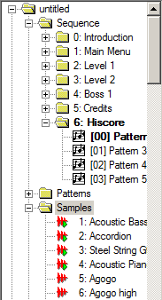
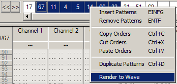

OpenMPT 1.18 - Release Notes
OpenMPT 1.18 - Release Notes
OpenMPT has changed a lot since the last official release (version 1.17.02.54).
This document should give a rough overview about the greatest changes in OpenMPT 1.18.
What's new?
General

- Sequences: It is possible to have more than just one orderlist in the MPTM format now.
This way, you can work on several tracks or subtunes at once using the same set of instruments.
This is for example useful when working on game music. You can also convert your work back
to the other formats - The sequences are merged into one orderlist then. Sequences can be
managed comfortably from the treeview.
- Support for new file formats: GDM (General Digital Music), IMF (Imago Orpheus),
J2B (Jazz Jackrabbit 2 music) and 8 channel Startrekker modules can now be imported. Scala tuning files can be used with OpenMPT's tuning editor now.
Support for other file formats was also notably improved: All PSM files (old and new Epic Megagames MASI)
load correctly now, ULT (Ultratracker) import is more accurate, XM files compressed with BoobieSequeezer or made with early versions of Skale Tracker load correctly, etc...
- A countless number of playback behaviour fixes to maximise compatibility with ProTracker,
Scream Tracker 3, Fasttracker 2 and Impulse Tracker, including a special
"ProTracker 1.x" playback mode. Compatibility export features have been enhanced.
- Support for ultra-low latency in ASIO mode, down to 1ms.
- Time estimation in the WAV and MP3 export dialogs; improved MP3 export (including ID3 v2.4 Tags).
- Default directories for VST plugins and presets.
- More customisable colours. Now, you can export your favourite colour scheme to a file and share it with your friends!
- Some new options, including the ability not to reset the channels when the module is looping and sample playback indicators in the treeview.
- Program settings are now stored in the Application Data folder by default.
- More intelligtent autosave behaviour, which does not autosave anymore if nothing has changed since the last autosave.
A friendly reminder: The autosave and backup options should always be enabled; You will be very glad about them once OpenMPT really crashes
or you accidentally overwrite a file.
- New and updated keymaps with many new shortcuts!
- Redesigned several dialogs.
Pattern Editor

- The upper panel is a lot more compact now; The split keyboard settings
have been moved to a separate dialog which can be called with a keyboard shortcut
or through the main menu.
- Parameter Control Notes: These new pattern events almost completely replace Zxx and \xx commands
for VST parameter automation in the MPTM format. They are not bound to a specific channel or macro anymore;
The pattern event stores all necessary information and can thus be moved around easily in the pattern.
The format for those events is: PC(s) XX YYY ZZZ. A PC "note" equals a Zxx effect, a PCs "note" behaves like \xx.
The instrument column (XX) contains the VST number (can be obtained from the VST list or through the context menu).
The volume column (YYY) stores the parameter that is going to be automatic, ranging from 0 to 999 (decimal).
The effect column (ZZZ) stores the parameter value, also ranging from 0 to 999 (decimal).
- Note Fade is a new note type in IT / MPTM modules, based on an unfinished feature in Impulse Tracker.
As the name suggests, this note fades out the instrument depending on its fadeout value (without releasing any envelopes).
Therefore, it will not work in sample mode.
- In the orderlist, multiple orders can now be selected at once (default multiselect shortcut: Shift).
Order selections can be quickly rendered to a wave file using the context menu.
- New paste modes: Overflow paste (which continues the paste in the next pattern if it reaches the bottom of the current pattern),
paste flood (which keeps pasting the data again and again, until it reaches the bottom of the pattern) and
push-forward paste (which pushes the already existing pattern data downwards, like in Impulse Tracker).
- Improved MOD editing - now it should be almost impossible to write commands in the patterns that don't belong into MOD files. :-)
Sample Editor
- Sample drawing! Create new empty samples and doodle around in the sample editor to create cool chip samples,
or fix small mistakes (f.e. peaks) in already existing samples.
- Undo: Finally, you can now also undo sample modifications; there are up to 100 undo steps for each individual sample.
- Mass export: Shift-Click the "Save" button to export all samples at once.
- Duplicate sample: Shift-Click the "New" button to clone all settings and the sample itself into a new sample slot.
- DC Offset Removal: Samples can now be aligned perfectly to the zero line, to allow maximum amplification.
Instrument Editor
- The envelopes can now be edited using the keyboard; some of the default keymaps already have the necessary shortcuts assigned
- if you are using a custom keymap, you might want to add those shortcuts to it using the keyboard setup.
- The sample map (IT / MPTM format) is now also applied to VST instruments. This way, you can easily transpose a VST instrument up or down.
Some entries have been added to the sample map's context menu, to simplify this.
- A basic envelope zoom feature; Might still look a bit weird at extreme zoom. :-)
VST Plugins
- Pressing Shift while changing a plugin parameter in the plugin's GUI will open the
MIDI Mapping dialog. Does not work with all plugins.
- Enhanced VST compatibility.
There's more...
For a detailed description of what has changed, check history.txt.
Known Issues
This list has mostly been copied over from the old 1.17RC2 release notes, so this not very comprehensive... :-)
- Lacking support for VST 2.4+
- Some controls are vanishing randomly all the time, most notably under Windows Vista and Windows 7.
- Previewing samples from the treeview's file browser stops the playing module.
- Cannot preview instruments directly from the MIDI library in the treeview.
- Excessive performance drop when dragging over the graphical parameter editor during playback.
- The Right Alt (or Alt Gr) key is not handled well by the keyboard configuration.
- In Windows 98, the graphical parameter editor and instrument envelope editor grid display are messed up.
- There is no real way to find out what features of the tracker are supported by the original trackers (Impulse Tracker, Fasttracker 2, etc...) when working with those file formats...
Contact
Helpful bug reports, new ideas and brave volunteers to test early development builds or contribute to the code are more than welcome!
You can meet us at the ModPlug Central forums: http://openmpt.com/forum/.